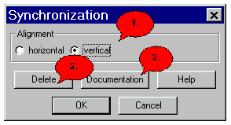

Synchronization Dialog |
|
 1. Here you can choose whether the synchronisation is displayed horizontally oder vertically. 2. In order to remove the current synchronization. If you pressed 'Delete', you must click afterwards 'OK' in order to completely delete the synchronization. 3. Here you come into the Docu-Dialog. 4. Here you come into the dialogue help, in whom you are for the moment. 5. To leave the dialog and store the entered data press 'OK'. 6. To leave the dialog without storing press 'Cancel'
|
Back to the dialog overview |